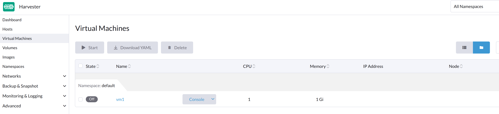
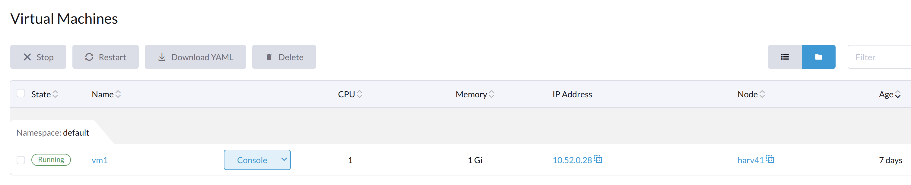

Virtual Machine Issues
The following sections contain information useful in troubleshooting issues related to SUSE Virtualization VM management.
VM Start Button is Not Visible
Issue Description
On rare occasions, the Start button is unavailable on the SUSE Virtualization UI for VMs that are Off. Without that button, users are unable to start the VMs.
VM General Operations
On the SUSE Virtualization UI, the Stop button is visible after a VM is created and started.
The Start button is visible after the VM is stopped.
When the VM is powered off from inside the VM, both the Start and Restart buttons are visible.
General VM Related Objects
A Running VM
The objects vm, vmi, and pod, which are all related to the VM, exist. The status of all three objects is Running.
# kubectl get vm NAME AGE STATUS READY vm8 7m25s Running True # kubectl get vmi NAME AGE PHASE IP NODENAME READY vm8 78s Running 10.52.0.199 harv41 True # kubectl get pod NAME READY STATUS RESTARTS AGE virt-launcher-vm8-tl46h 1/1 Running 0 80s
A VM Stopped Using the SUSE Virtualization UI
Only the object vm exists and its status is Stopped. Both vmi and pod disappear.
# kubectl get vm NAME AGE STATUS READY vm8 123m Stopped False # kubectl get vmi No resources found in default namespace. # kubectl get pod No resources found in default namespace. #
A VM Stopped Using the VM’s Poweroff Command
The objects vm, vmi, and pod, which are all related to the VM, exist. The status of vm is Stopped, while the status of pod is Completed.
# kubectl get vm NAME AGE STATUS READY vm8 134m Stopped False # kubectl get vmi NAME AGE PHASE IP NODENAME READY vm8 2m49s Succeeded 10.52.0.199 harv41 False # kubectl get pod NAME READY STATUS RESTARTS AGE virt-launcher-vm8-tl46h 0/1 Completed 0 2m54s
Issue Analysis
When the issue occurs, the objects vm, vmi, and pod exist. The status of the objects is similar to that of A VM Stopped Using the VM’s Poweroff Command.
Example:
The VM ocffm031v000 is not ready (status: "False") because the virt-launcher pod is terminating (reason: "PodTerminating").
- apiVersion: kubevirt.io/v1
kind: VirtualMachine
...
status:
conditions:
- lastProbeTime: "2023-07-20T08:37:37Z"
lastTransitionTime: "2023-07-20T08:37:37Z"
message: virt-launcher pod is terminating
reason: PodTerminating
status: "False"
type: Ready
Similarly, the VMI (virtual machine instance) ocffm031v000 is not ready (status: "False") because the virt-launcher pod is terminating (reason: "PodTerminating").
- apiVersion: kubevirt.io/v1
kind: VirtualMachineInstance
...
name: ocffm031v000
...
status:
activePods:
ec36a1eb-84a5-4421-b57b-2c14c1975018: aibfredg02
conditions:
- lastProbeTime: "2023-07-20T08:37:37Z"
lastTransitionTime: "2023-07-20T08:37:37Z"
message: virt-launcher pod is terminating
reason: PodTerminating
status: "False"
type: Ready
On the other hand, the pod virt-launcher-ocffm031v000-rrkss is not ready (status: "False") because the pod has run to completion (reason: "PodCompleted").
The underlying container 0d7a0f64f91438cb78f026853e6bebf502df1bdeb64878d351fa5756edc98deb is terminated, and the exitCode is 0.
- apiVersion: v1
kind: Pod
...
name: virt-launcher-ocffm031v000-rrkss
...
ownerReferences:
- apiVersion: kubevirt.io/v1
...
kind: VirtualMachineInstance
name: ocffm031v000
uid: 8d2cf524-7e73-4713-86f7-89e7399f25db
uid: ec36a1eb-84a5-4421-b57b-2c14c1975018
...
status:
conditions:
- lastProbeTime: "2023-07-18T13:48:56Z"
lastTransitionTime: "2023-07-18T13:48:56Z"
message: the virtual machine is not paused
reason: NotPaused
status: "True"
type: kubevirt.io/virtual-machine-unpaused
- lastProbeTime: "null"
lastTransitionTime: "2023-07-18T13:48:55Z"
reason: PodCompleted
status: "True"
type: Initialized
- lastProbeTime: "null"
lastTransitionTime: "2023-07-20T08:38:56Z"
reason: PodCompleted
status: "False"
type: Ready
- lastProbeTime: "null"
lastTransitionTime: "2023-07-20T08:38:56Z"
reason: PodCompleted
status: "False"
type: ContainersReady
...
containerStatuses:
- containerID: containerd://0d7a0f64f91438cb78f026853e6bebf502df1bdeb64878d351fa5756edc98deb
image: registry.suse.com/suse/sles/15.4/virt-launcher:0.54.0-150400.3.3.2
imageID: sha256:43bb08efdabb90913534b70ec7868a2126fc128887fb5c3c1b505ee6644453a2
lastState: {}
name: compute
ready: false
restartCount: 0
started: false
state:
terminated:
containerID: containerd://0d7a0f64f91438cb78f026853e6bebf502df1bdeb64878d351fa5756edc98deb
exitCode: 0
finishedAt: "2023-07-20T08:38:55Z"
reason: Completed
startedAt: "2023-07-18T13:50:17Z"
A critical difference is that the Stop and Start actions appear in the stateChangeRequests property of vm.
status:
conditions:
...
printableStatus: Stopped
stateChangeRequests:
- action: Stop
uid: 8d2cf524-7e73-4713-86f7-89e7399f25db
- action: Start
Root Cause
The root cause of this issue is under investigation.
It is notable that the source code checks the status of vm and assumes that the object is starting. No Start and Restart operations are added to the object.
func (vf *vmformatter) canStart(vm *kubevirtv1.VirtualMachine, vmi *kubevirtv1.VirtualMachineInstance) bool {
if vf.isVMStarting(vm) {
return false
}
..
}
func (vf *vmformatter) canRestart(vm *kubevirtv1.VirtualMachine, vmi *kubevirtv1.VirtualMachineInstance) bool {
if vf.isVMStarting(vm) {
return false
}
...
}
func (vf *vmformatter) isVMStarting(vm *kubevirtv1.VirtualMachine) bool {
for _, req := range vm.Status.StateChangeRequests {
if req.Action == kubevirtv1.StartRequest {
return true
}
}
return false
}
Workaround
To address the issue, you can force delete the pod using the command kubectl delete pod virt-launcher-ocffm031v000-rrkss -n namespace --force.
After the pod is successfully deleted, the Start button becomes visible again on the SUSE Virtualization UI.
VM Stuck in Starting State with Error Messsage not a device node
Impacted versions: v1.3.0
Issue Description
Some VMs may fail to start and then become unresponsive after the cluster or some nodes are restarted. On the Dashboard screen of the SUSE Virtualization UI, the status of the affected VMs is stuck at Starting.
Issue Analysis
The status of the pod related to the affected VM is CreateContainerError.
$ kubectl get pods NAME READY STATUS RESTARTS AGE virt-launcher-vm1-w9bqs 0/2 CreateContainerError 0 9m39s
The phrase failed to generate spec: not a device node can be found in the following:
$kubectl get pods -oyaml
apiVersion: v1
items:
apiVersion: v1
kind: Pod
metadata:
...
containerStatuses:
- image: registry.suse.com/suse/sles/15.5/virt-launcher:1.1.0-150500.8.6.1
imageID: ""
lastState: {}
name: compute
ready: false
restartCount: 0
started: false
state:
waiting:
message: 'failed to generate container "50f0ec402f6e266870eafb06611850a5a03b2a0a86fdd6e562959719ccc003b5"
spec: failed to generate spec: not a device node'
reason: CreateContainerError
kubelet.log file:
file path: /var/lib/rancher/rke2/agent/logs/kubelet.log E0205 20:44:31.683371 2837 pod_workers.go:1294] "Error syncing pod, skipping" err="failed to \"StartContainer\" for \"compute\" with CreateContainerError: \"failed t o generate container \\\"255d42ec2e01d45b4e2480d538ecc21865cf461dc7056bc159a80ee68c411349\\\" spec: failed to generate spec: not a device node\"" pod="default/virt-laun cher-caddytest-9tjzj" podUID=d512bf3e-f215-4128-960a-0658f7e63c7c
containerd.log file:
file path: /var/lib/rancher/rke2/agent/containerd/containerd.log
time="2024-02-21T11:24:00.140298800Z" level=error msg="CreateContainer within sandbox \"850958f388e63f14a683380b3c52e57db35f21c059c0d93666f4fdaafe337e56\" for &ContainerMetadata{Name:compute,Attempt:0,} failed" error="failed to generate container \"5ddad240be2731d5ea5210565729cca20e20694e364e72ba14b58127e231bc79\" spec: failed to generate spec: not a device node"
After adding debug information to containerd, it identifies the error message not a device node is upon the file pvc-3c1b28fb-*.
time="2024-02-22T15:15:08.557487376Z" level=error msg="CreateContainer within sandbox \"d23af3219cb27228623cf8168ec27e64e836ed44f2b2f9cf784f0529a7f92e1e\" for &ContainerMetadata{Name:compute,Attempt:0,} failed" error="failed to generate container \"e4ed94fb5e9145e8716bcb87aae448300799f345197d52a617918d634d9ca3e1\" spec: failed to generate spec: get device path: /var/lib/kubelet/plugins/kubernetes.io/csi/volumeDevices/publish/pvc-3c1b28fb-683e-4bf5-9869-c9107a0f1732/20291c6b-62c3-4456-be8a-fbeac118ec19 containerPath: /dev/disk-0 error: not a device node"
This is a CSI related file, but it is an empty file instead of the expected device file. Then the containerd denied the CreateContainer request.
$ ls /var/lib/kubelet/plugins/kubernetes.io/csi/volumeDevices/publish/pvc-3c1b28fb-683e-4bf5-9869-c9107a0f1732/ -alth
total 8.0K
drwxr-x--- 2 root root 4.0K Feb 22 15:10 .
-rw-r--r-- 1 root root 0 Feb 22 14:28 aa851da3-cee1-45be-a585-26ae766c16ca
-rw-r--r-- 1 root root 0 Feb 22 14:07 20291c6b-62c3-4456-be8a-fbeac118ec19
drwxr-x--- 4 root root 4.0K Feb 22 14:06 ..
-rw-r--r-- 1 root root 0 Feb 21 15:48 4333c9fd-c2c8-4da2-9b5a-1a310f80d9fd
-rw-r--r-- 1 root root 0 Feb 21 09:18 becc0687-b6f5-433e-bfb7-756b00deb61b
$file /var/lib/kubelet/plugins/kubernetes.io/csi/volumeDevices/publish/pvc-3c1b28fb-683e-4bf5-9869-c9107a0f1732/20291c6b-62c3-4456-be8a-fbeac118ec19
: emptyThe output listed above directly contrasts with the following example, which shows the expected device file of a running VM.
$ ls /var/lib/kubelet/plugins/kubernetes.io/csi/volumeDevices/publish/pvc-732f8496-103b-4a08-83af-8325e1c314b7/ -alth total 8.0K drwxr-x--- 2 root root 4.0K Feb 21 10:53 . drwxr-x--- 4 root root 4.0K Feb 21 10:53 .. brw-rw---- 1 root root 8, 16 Feb 21 10:53 4883af80-c202-4529-a2c6-4e7f15fe5a9b
Root Cause
After the cluster or specific nodes are rebooted, the kubelet calls NodePublishVolume for the new pod without first calling NodeStageVolume. Moreover, the Longhorn CSI plugin bind mounts the regular file at the staging target path (previously used by the deleted pod) to the target path, and the operation is considered successful.
Workaround
Cluster level operation:
-
Find the backing pods of the affected VMs and the related Longhorn volumes.
$ kubectl get pods NAME READY STATUS RESTARTS AGE virt-launcher-vm1-nxfm4 0/2 CreateContainerError 0 7m11s $ kubectl get pvc -A NAMESPACE NAME STATUS VOLUME CAPACITY ACCESS MODES STORAGECLASS AGE default vm1-disk-0-9gc6h Bound pvc-f1798969-5b72-4d76-9f0e-64854af7b59c 1Gi RWX longhorn-image-fxsqr 7d22h
-
Stop the affected VMs from SUSE Virtualization UI.
The VM may stuck in
Stopping, continue the next step. -
Delete the backing pods forcely.
$ kubectl delete pod virt-launcher-vm1-nxfm4 --force Warning: Immediate deletion does not wait for confirmation that the running resource has been terminated. The resource may continue to run on the cluster indefinitely. pod "virt-launcher-vm1-nxfm4" force deleted
The VM is off now.

Node level operation, node by node:
-
Cordon a node.
-
Unmout all the affected Longhorn volumes in this node.
You need to ssh to this node and execute the
sudo -i umount pathcommand.$ umount /var/lib/kubelet/plugins/kubernetes.io/csi/volumeDevices/pvc-f1798969-5b72-4d76-9f0e-64854af7b59c/dev/* umount: /var/lib/kubelet/plugins/kubernetes.io/csi/volumeDevices/pvc-f1798969-5b72-4d76-9f0e-64854af7b59c/dev/4b2ab666-27bd-4e3c-a218-fb3d48a72e69: not mounted. umount: /var/lib/kubelet/plugins/kubernetes.io/csi/volumeDevices/pvc-f1798969-5b72-4d76-9f0e-64854af7b59c/dev/6aaf2bbe-f688-4dcd-855a-f9e2afa18862: not mounted. umount: /var/lib/kubelet/plugins/kubernetes.io/csi/volumeDevices/pvc-f1798969-5b72-4d76-9f0e-64854af7b59c/dev/91488f09-ff22-45f4-afc0-ca97f67555e7: not mounted. umount: /var/lib/kubelet/plugins/kubernetes.io/csi/volumeDevices/pvc-f1798969-5b72-4d76-9f0e-64854af7b59c/dev/bb4d0a15-737d-41c0-946c-85f4a56f072f: not mounted. umount: /var/lib/kubelet/plugins/kubernetes.io/csi/volumeDevices/pvc-f1798969-5b72-4d76-9f0e-64854af7b59c/dev/d2a54e32-4edc-4ad8-a748-f7ef7a2cacab: not mounted.
-
Uncordon this node.
-
Start the affected VMs from harvester UI.
Wait some time, the VM will run successfully.
The newly generated csi file is an expected device file.
$ ls /var/lib/kubelet/plugins/kubernetes.io/csi/volumeDevices/publish/pvc-f1798969-5b72-4d76-9f0e-64854af7b59c/ -alth ... brw-rw---- 1 root root 8, 64 Mar 6 11:47 7beb531d-a781-4775-ba5e-8773773d77f1
Virtual Machine IP Address Not Displayed
The qemu-guest-agent Package Is Not Installed
Description
The Virtual Machines screen on the SUSE Virtualization UI does not display the IP address of a newly created or imported virtual machine.
Analysis
This issue usually occurs when the qemu-guest-agent package is not installed on the virtual machine. To determine if this is the root cause, check the status of the VirtualMachineInstance object.
$ kubectl get vmi -n <NAMESPACE> <NAME> -ojsonpath='{.status.interfaces[0].infoSource}'The output does not contain the string guest-agent when the qemu-guest-agent package is not installed.
Workaround
You can install the QEMU guest agent by editing the virtual machine configuration.
-
On the SUSE Virtualization UI, go to Virtual Machines.
-
Locate the affected virtual machine, and then select ⋮ → Edit Config.
-
On the Advanced Options tab, under Cloud Config, select Install guest agent.
-
Click Save.
However, cloud-init is run only once (when the virtual machine is started for the first time). To apply new Cloud Config settings, you must delete the cloud-init directory in the virtual machine.
$ sudo rm -rf /var/lib/cloud/*After deleting the directory, you must restart the virtual machine so that cloud-init is run again and the qemu-guest-agent package is installed.
IPv6 Race Condition Between virt-launcher Pod and Guest Operating System
Description
The SUSE Virtualization UI does not display the IP address of the virtual machine whenever the virt-launcher pod’s network interface acquires an IPv6 link-local address.
Analysis
The QEMU guest agent is responsible for reporting information about the guest operating system, including interface details, to the virtual machine instance for displaying on the SUSE Virtualization UI. The issue occurs when the virtual machine’s pod interface acquires an IPv6 link-local address and reports it to the virtual machine instance before the QEMU guest agent can provide its own information. Once this happens, the IPv4 address from the QEMU guest agent is never reported due to a bug in KubeVirt.
You can check the IP address of the pod interface and the virtual machine instance using the following steps:
-
Retrieve the IP address of the virtual machine instance:
$ kubectl get vmi -n <NAMESPACE> <NAME> -ojsonpath='{.status.interfaces[0].ipAddress}'
The output only shows the IPv6 link-local address.
-
Retrieve the IP address of the pod interface:
$ kubectl exec -it -n <namespace> <pod-name> -- /bin/bash -c "ip a show label pod\*"
The output matches the IPv6 address from the virtual machine instance.
-
To retrieve the assigned IPv4 address, open the virtual machine’s serial console and run
ip ainside the guest operating system.
|
This issue generally does not affect the virtual machine’s operations and uptime. You can still access the virtual machine via SSH using its network interface’s IPv4 address. In certain cases, this issue may impact Rancher integration, causing the provisioning and joining of nodes in the guest cluster to time out. |
Workaround
The workaround is to disable IPv6 in the kernel parameters of SUSE Virtualization.
In the above example, add ipv6.disable=1 and reboot the nodes to prevent virtual machine pod interfaces from acquiring an IPv6 link-local address.
Virtual Machine IP Address Intermittently Not Displayed
Description
The IP address of new virtual machines intermittently disappears and reappears on the SUSE Virtualization UI.
Analysis
The QEMU guest agent is responsible for reporting information about the guest operating system, including interface details, to the virtual machine instance for displaying on the SUSE Virtualization UI. The issue occurs when the virtual machine instance is updated with domain data that contain empty network interfaces, which is caused by an upstream KubeVirt issue.
This behavior is more commonly observed in Alma Linux 9 and Rocky Linux 9, wherein the QEMU guest agent frequently updates file system information to the virtual machine instance.
To check if the issue exists in your environment, run the following command at different times:
$ kubectl get vmi -n <NAMESPACE> <NAME> -ojsonpath='{.status.interfaces[0].ipAddress}'
The ipAddress field may be empty when you run the command.
To retrieve the assigned IPv4 address, open the virtual machine’s serial console and run ip a inside the guest operating system.
| This issue generally does not affect the virtual machine’s operations and uptime. You can still access the virtual machine via SSH using its network interface’s IPv4 address. |
Workaround
While no direct workaround is available for this issue, an [upstream fix](https://github.com/kubevirt/kubevirt/pull/13624) has optimized the code to reduce unnecessary updates from the QEMU guest agent. This enhancement may prevent the issue from occurring.
Unschedulable virtual machines
A virtual machine may be marked Unschedulable because of an unsatisfied affinity rule.
Specifically, the VirtualMachine object contains an affinity rule similar to the following:
apiVersion: kubevirt.io/v1
kind: VirtualMachine
metadata:
name: vm100
namespace: default
spec:
affinity:
nodeAffinity:
requiredDuringSchedulingIgnoredDuringExecution:
nodeSelectorTerms:
- matchExpressions:
- key: network.harvesterhci.io/cn2
operator: In
values:
- 'true'The pod status is Pending, and the error message indicates that no node meets the affinity rule’s criteria.
Example:
$ kubectl get pods
NAME READY STATUS RESTARTS AGE
virt-launcher-vm100-f4nh4 0/2 Pending 0 5m12s
$ kubectl get pods virt-launcher-vm100-f4nh4 -oyaml
apiVersion: v1
kind: Pod
metadata:
name: virt-launcher-vm100-f4nh4
namespace: default
spec:
affinity:
nodeAffinity:
requiredDuringSchedulingIgnoredDuringExecution:
nodeSelectorTerms:
- matchExpressions:
- key: network.harvesterhci.io/cn2
operator: In
values:
- "true"
...
status:
conditions:
- lastProbeTime: null
lastTransitionTime: "2025-07-28T16:21:56Z"
message: '0/2 nodes are available: 1 node(s) didn''t match Pod''s node affinity/selector,
1 node(s) had untolerated taint {node.kubernetes.io/unreachable: }. preemption:
0/2 nodes are available: 2 Preemption is not helpful for scheduling.'
reason: Unschedulable
status: "False"
type: PodScheduled
...Root cause
SUSE Virtualization may automatically apply affinity rules based on how a virtual machine is configured. In the example, the virtual machine vm100 attaches to the cluster network cn2, and SUSE Virtualization applies the affinity rule network.harvesterhci.io/cn2. However, no nodes meet the rule’s criteria, so the virtual machine cannot be scheduled.
Unintentional virtual machine template modification via cloud config YAML
When you use a template to create a virtual machine and then modify that virtual machine’s user data using the Edit as YAML feature, the source template may be unintentionally modified once you save the changes.
This issue occurs because the system does not properly dissociate the configuration inheritance. Because the new configuration remains linked to the source template, saving the changes automatically overwrites the template’s data.
|
Avoid using the Edit as YAML feature when creating virtual machines, especially when using a template. Instead, use the dedicated fields and options available on the Virtual Machine: Create screen. |
To mitigate the issue, perform the following steps:
-
Identify the name and namespace of the affected virtual machine.
-
Identify the Cloud Config secret that is associated with the affected virtual machine.
# Get the current Secret name linked to the VM's cloudInitNoCloud volume source: VM_NAME=<VM_NAME> VM_NAMESPACE=<VM_NAMESPACE> SECRET=$(kubectl get vm $VM_NAME -n $VM_NAMESPACE -o jsonpath='{.spec.template.spec.volumes[?(@.cloudInitNoCloud)].cloudInitNoCloud.secretRef.name}') SECRET_NAMESPACE=$(kubectl get secret -A | grep $SECRET | awk '{print $1}') echo "Current Secret: $SECRET_NAMESPACE -> $SECRET" -
Create an independent copy of the secret.
Export the current secret, remove the identifying metadata, assign a unique name, and then apply the secret.
# Define a new, unique name for the secret NEW_SECRET="$VM_NAME-$(date +%s)" # Export, clean, rename, and create the new Secret kubectl get secret $SECRET -n $SECRET_NAMESPACE -o json | \ jq 'del(.metadata.creationTimestamp, .metadata.resourceVersion, .metadata.uid, .metadata.ownerReferences, .metadata.annotations["kubectl.kubernetes.io/last-applied-configuration"], .metadata.selfLink)' | \ jq '.metadata.name = "'"$NEW_SECRET"'"' | \ jq '.metadata.namespace = "'"$VM_NAMESPACE"'"' | \ kubectl apply -n $VM_NAMESPACE -f - -
Update the virtual machine configuration to use the new secret.
Point the virtual machine’s
cloudInitNoCloudvolume source to the new secret.# Patch the VM to replace the secretRef name VOLUME_INDEX=$(kubectl get vm $VM_NAME -n $NAMESPACE -o json | jq '.spec.template.spec.volumes | to_entries[] | select(.value.cloudInitNoCloud != null) | .key') kubectl patch vm $VM_NAME -n $VM_NAMESPACE --type='json' \ -p='[{"op": "replace", "path": "/spec/template/spec/volumes/'$VOLUME_INDEX'/cloudInitNoCloud/secretRef/name", "value": "'"$NEW_SECRET"'"}, {"op": "replace", "path": "/spec/template/spec/volumes/'$VOLUME_INDEX'/cloudInitNoCloud/networkDataSecretRef/name", "value": "'"$NEW_SECRET"'"}]'
Once the Cloud Config is backed by a unique secret, you can use the SUSE Virtualization UI’s YAML editor to edit the virtual machine configuration without affecting the source template.
Related issue: #9207